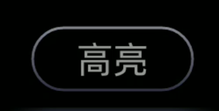
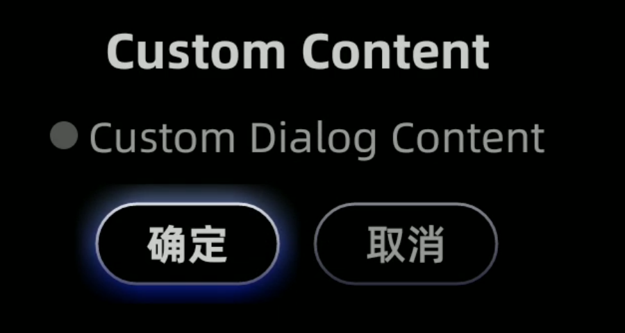
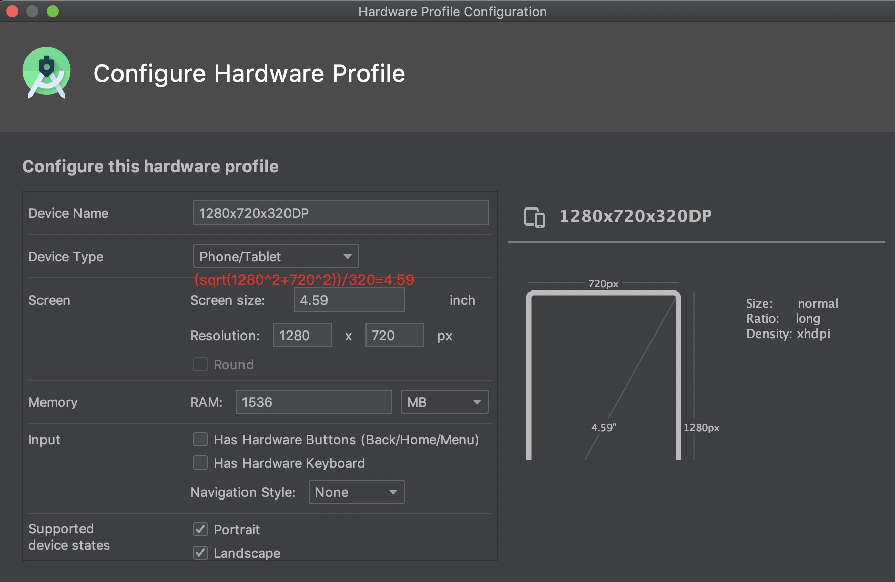
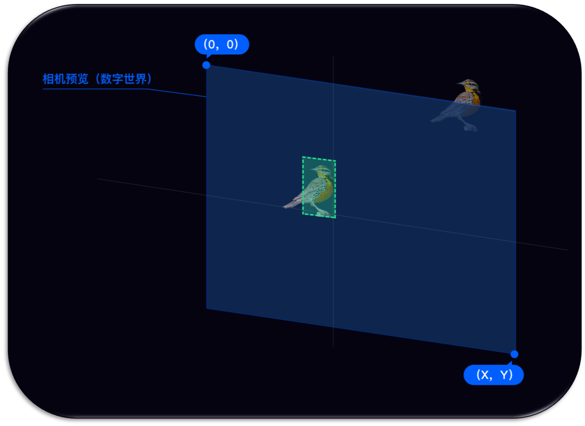

Glass UI SDK
Version: 1.6.2
一、UI SDK介绍
1.1 概述
提供一套在Rokid Glass上开发应用的基础UI库,目前已经提供以下支持：
1. GlassButton
Glass自定义的Button
2. GlassDialog
提供了一系列常用的对话框
3. 屏幕适配
屏幕适配方案，可以在Rokid Glass上保持UI统一按比例显示
4. GlassAlignment
由于AR 眼镜特有的屏幕显示特性(Optical see through)，在开发眼镜上的"识别类应用"时，
为保证好的体验，建议不显示camera preview，然后把识别后要显示出来的标定内容做一次对齐映射，以保证人眼看到的标定内容固定在真实物体上。
5. IMU View
提供了一个可通过头控横向自动滚动的列表控件
二、集成说明
在project的build.gradle中添加jcenter依赖：
allprojects {
repositories {
google()
jcenter()
}
}
2.1 Gradle依赖
在项目的 /app/build.gradle 文件中，增加如下依赖：
...
dependencies {
...
implementation 'com.rokid.glass:ui:1.5.6'
}
2.2 Demo下载
三、功能列表
3.1 GlassButton
Glass自定义的Button
Focused:
Normal

3.1.1 用法
<com.rokid.glass.ui.button.GlassButton
android:id="@+id/custom_dialog_btn"
android:layout_width="wrap_content"
android:layout_height="wrap_content"
android:text="Custom Dialog"
app:layout_constraintLeft_toLeftOf="parent"
app:layout_constraintRight_toRightOf="parent"
app:layout_constraintTop_toBottomOf="@id/dialog_btn" />
3.2 GlassDialog
提供了一系列常用的对话框,通过不同Builder 来构建不同类型的对话框。 目前提供的Builder:
3.2.1 CommonDialogBuilder
通用的 DialogBuilder

| 方法 | 含义 | 备注 |
|---|---|---|
| setTitle | 设置标题 | |
| setContent | 设置内容 | 和自定义内容布局选其一 |
| setConfirmText | 设置确定按钮文字 | |
| setCancelText | 设置取消按钮文字 | |
| setContentLayoutId | 设置内容自定义布局id | |
| setContentLayoutView | 设置内容自定义布局View | 和setContentLayoutId选其一 |
| setConfirmListener | 设置Confirm监听 | |
| setCancelListener | 设置Cancel监听 |
示例代码
new GlassDialog.CommonDialogBuilder(this)
.setTitle("Title")
.setContent("Content")
.setConfirmText("Confirm")
.setCancelText("Cancel")
.setContentLayoutId(R.layout.layout_custom_dialog_content)
.setConfirmListener(new GlassDialogListener() {
@Override
public void onClick(View view) {
}
})
.setCancelListener(new GlassDialogListener() {
@Override
public void onClick(View view) {
}
})
.show();
3.3 屏幕适配
在app的AndroidManifest.xml声明：
<manifest>
<application>
<meta-data
android:name="design_width_in_dp"
android:value="640"/>
<meta-data
android:name="design_height_in_dp"
android:value="360"/>
</application>
</manifest>
这里的都是根据设计图的尺寸来，以宽或者高为基准，默认是宽。
模拟器Preview设置

3.4 GlassAlignment
Alignment概念：
- Camera预览界面通过Glass显示屏幕进入人眼睛的映射过程.
在手机上开发如下图：

- 在眼镜上开发如下图：

- 蓝色代表
相机预览的画面 - 绿色代表
相机预览中物体的坐标 - 橙色代表
LCD屏幕在相机预览的映射区域,百分比表示真实世界在虚拟世界的比例 - 白色代表物体映射到
LCD屏幕的显示区域
3.4.1 getAlignmentRect
说明：根据preview的rect，获取到映射到LCD屏幕的区域
public static Rect getAlignmentRect(final int previewWidth, final int previewHeight, final Rect previewRect)
| 参数 | 含义 | 默认值 |
|---|---|---|
| previewWidth | Camera preview宽 | |
| previewHeight | Camera preview高 | |
| previewRect | Camera preview的Rect |
示例代码：人脸识别后，在屏幕上画出人脸Rect
public static final int PREVIEW_WIDTH = 1280;
public static final int PREVIEW_HEIGHT = 720;
//camera preview的人脸区域
Rect previewRect = faceDoCache.faceDo.toRect(getWidth(), getHeight());
//根据preview的人脸Rect，映射后，获取最终在屏幕上绘制的Rect
Rect rect = RokidSystem.getAlignmentRect(PREVIEW_WIDTH, PREVIEW_HEIGHT,previewRect);
...
//根据
canvas.save();
canvas.translate((rect.left + rect.right) / 2f, (rect.top + rect.bottom) / 2f);
...
canvas.restore();
...
3.4.2 getWindowRect
说明：根据LCD屏幕的rect，获取到preview的区域rect
public static Rect getWindowRect(final int previewWidth, final int previewHeight, final Rect windowRect)
| 参数 | 含义 | 默认值 |
|---|---|---|
| previewWidth | Camera preview宽 | |
| previewHeight | Camera preview高 | |
| windowRect | LCD屏幕上的Rect |
3.4.3 getProjectionMatrix_OpticalSeeThrough
说明：获取OpticalSeeThrough场景下，OpenGLES 3D 应用的投影矩阵（横屏状态），以便人眼看到的标定内容和真实世界对齐
public static float[] getProjectionMatrix_OpticalSeeThrough()
示例代码: 对于横屏应用，获取OpenGLES MVP矩阵的投影矩阵
float projectionMatrix[] = RokidSystem.getProjectionMatrix_OpticalSeeThrough();
...
3.5 IMU View
- 参照IMU SDK中的使用说明